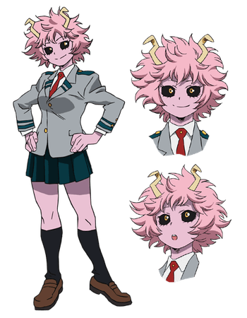

Mina Ashido
Nome de Herói: Pinky
Individualidade: Ácido - Secreta um ácido corrosivo de sua pele, cujo nível de solubilidade ela controla.
Perfil:
Pele rosa e chifres. É a alma da festa: alegre, adora dançar, super sociável e muito atlética, embora não vá muito bem nas provas teóricas.